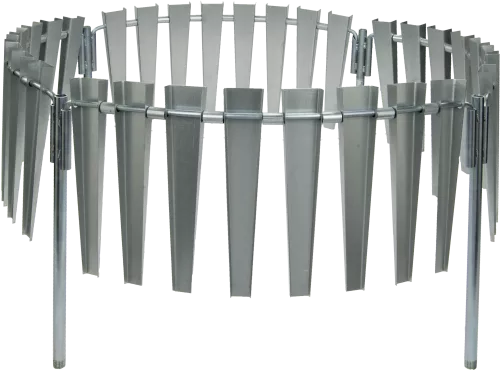

| SN |
Name |
Image |
Description |
| 1 |
Solar Panel |
 |
- Provides power for automatic stations
- Charges backup batteries
|
| 2 |
Battery |
 |
- Stores energy for use during low sunlight
- Ensures continuous operation
|
| 2 |
Voltage Regulator |
|
- Stores energy for use during low sunlight
- Ensures continuous operation
|
| 3 |
Radio Modem |
 |
- Transmits station data wirelessly
- Used for remote monitoring
|
| 4 |
Lightning Arrestor |
 |
- Protects station equipment from lightning strikes
- Improves station safety and durability
|
| 4 |
Wind Screen |
 |
- minimize the effect of strong winds on the rain measurements.
- Model:260-953
- Diameter:40.6 Cm
- Manual
|
| 5 |
Enclosure |
 |
- minimize the effect of strong winds on the rain measurements.
- Model:260-953
- Diameter:40.6 Cm
- Manual
|